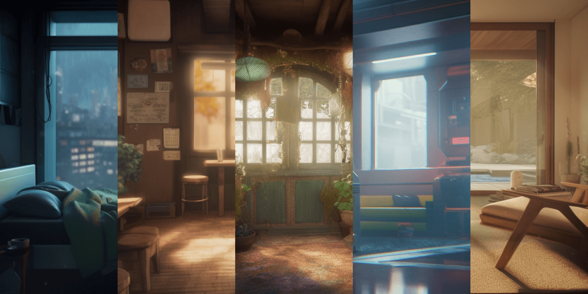
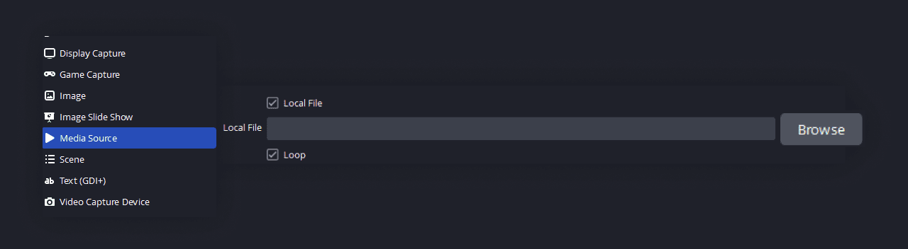
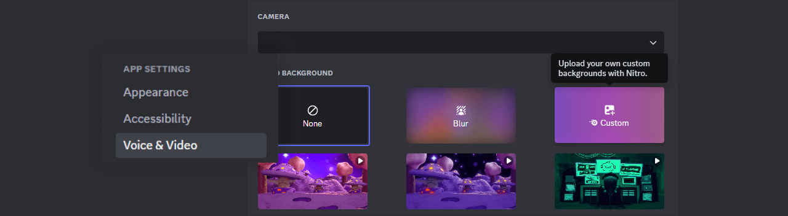
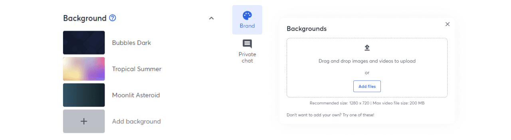
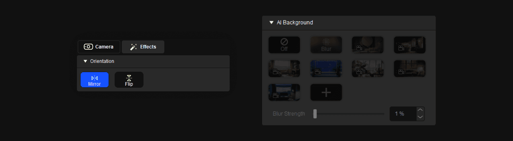
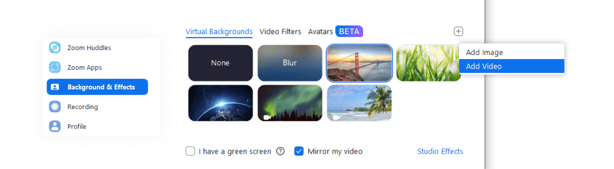
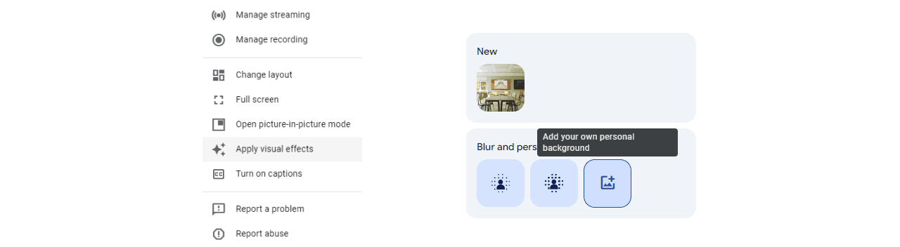

{kind=link}

Ever wondered how to make your streams or calls stand out? Well, you’re in luck! I’ll walk you through how to set up new animated backgrounds in some of the most popular apps in no time.
This guide covers how to set up animated backgrounds in OBS, Discord, StreamYard, Camera Hub, Zoom, and Google Meet.
OBS Studio
Open OBS and go to ‘Sources’.
Hit the ‘+’ and choose ‘Media Source’.
Name your source, click ‘OK’, and find your .mp4 file.
Make sure ‘Loop’ is on.
Resize and position, and you’re done!
{kind=link}

Discord
Open up ‘User Settings’ next to your name.
Go to ‘App Settings’ > ‘Voice & Video’.
In ‘Video Settings’, find ‘Video Background’ and click ‘Custom’
Upload your .mp4 and select it.
Join a call and show off your new background!
{kind=link}

StreamYard
In a ‘Studio’ broadcast setup, navigate to ‘Brand’.
Under ‘Background’, click ‘Add Background’ and upload.
Click your new background to apply.
Start broadcasting with your new animated scene!
{kind=link}

Camera Hub
Open Camera Hub and navigate to ‘Effects’.
Under ‘AI Backgrounds’, click the ‘+’ symbol and add a new one.
Upload your .mp4 file.
Select it and start your camera with style!
{kind=link}

Zoom
In the Zoom app, click ‘Settings’.
Go to ‘Background & Effects’.
Click the ‘+’ symbol next to ‘Virtual Backgrounds’ and add your .mp4 file.
Select it and join your call!
{kind=link}

Google Meet
Start or join a meeting.
Click ‘More options’ > ‘Apply Visual Effects’ > ‘Change background’.
In ‘Blur and Personal Backgrounds’, click ‘Add your own personal background’ and upload your .mp4 file
Choose the new background and enjoy!
{kind=link}

And there you go, you should be all set! Enjoy these backgrounds, and feel free to reach out if you run into any issues :)